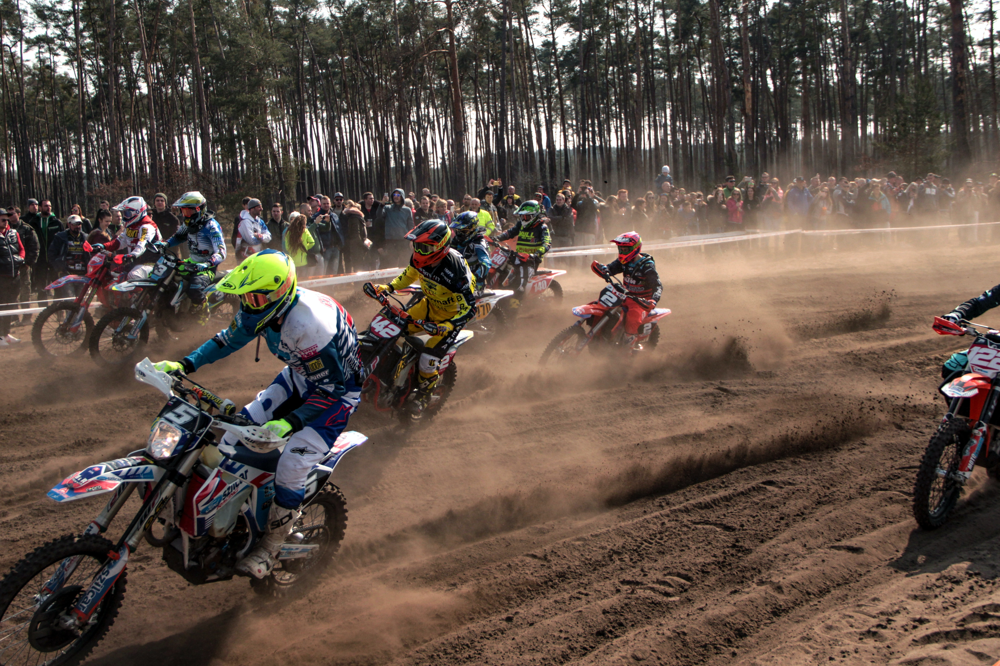
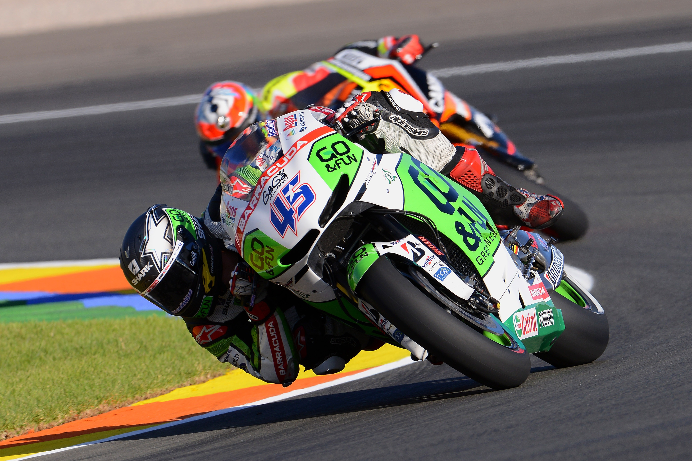

Motocros
El motocross es una disciplina de motociclismo que se desarrolla en circuitos sin pavimentar con saltos grandes, en la que los distintos participantes disputan una carrera con el objetivo de finalizar en primera posición en la meta.
Combina la velocidad con la destreza necesaria para controlar la motocicleta ante las irregularidades del terreno, con curvas cerradas, montículos, baches y cambios de rasante, y sobre una superficie de tierra que, generalmente, se encuentra embarrada con la finalidad de evitar el peligro que supone el polvo. Todo ello hace que en las carreras de motocross se sucedan saltos y derrapes.
Motos GP
Le llaman la categoría reina del motociclismo porque es la máxima expresión mundial de competición de motocicletas de velocidad. Los prototipos de dos ruedas más rápidos para competir en circuito. Donde se presupone que se baten los mejores pilotos del mundo. Motos cuyo corazón son motores de 4 tiempos con 1000 centímetros cúbicos que superan los 350 km/h si la recta es suficientemente larga. Esto es una MotoGP.
24 pilotos, formados por parejas en 12 equipos, se enfrentan desde marzo a noviembre en diferentes citas denominadas Grandes Premios, donde según sus resultados en carrera, van sumando puntos para que a final de temporada el que más tenga será coronado campeón: el mejor piloto del mundo de las dos ruedas. Sin desmerecer al resto de disciplinas mundiales, el título de MotoGP da ese honor.
Turismo

Las motos gran turismo, es un tipo de motocicleta diseñado específicamente para realizar largos viajes. Tienen motores de media o gran cilindrada, una posición de conducción erguida, parabrisas y tanque de combustible grandes, y maletas a los lados de la parte trasera.
Estas motos cuentan con carenados de amplias dimensiones, destinadas a brindar la máxima protección posible a los ocupantes, ya que son diseñadas para el transporte de un conductor y un pasajero. Su peso y dimensiones no las hacen aptas para la conducción deportiva pero, a modo de consuelo, permite incluir entre su equipamiento un dispositivo de audio, control de velocidad y un ordenador multifunción.